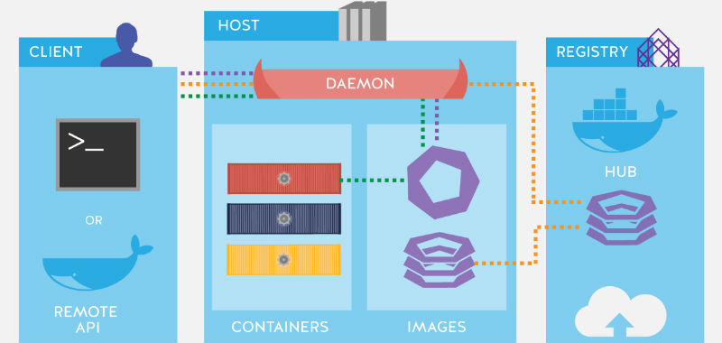
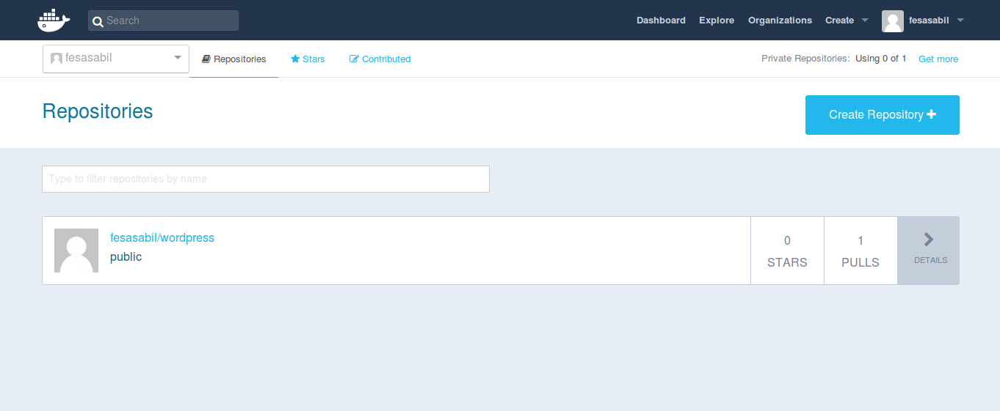

Pengertian Docker :
Docker adalah salah satu platform yang dibangun berdasarkan teknologi container. Docker merupakan sebuah project open-source yang menyediakan platform terbuka untuk developer maupun sysadmin untuk dapat membangun, mengemas, dan menjalankan aplikasi dimanapun sebagai sebuah wadah (container) yang ringan. Dengan sangat populernya docker, sebagian orang sering menganggap docker adalah sebutan lain untuk container.
Docker pertama kali dikembangkan oleh Solomon Hykes sebagai project internal di dotCloud bersama dengan beberapa koleganya seperti Andrea Luzzardi dan Francois-Xavier Bourlet. Perilisan platform ini secara open-source dilakukan pada mei 2013 silam. Docker terus berkembang hingga memiliki ribuan orang yang berkontribusi membuatnya menjadi lebih baik.
Fungsi Docker :
untuk menyediakan open tools ke pihak pengembang untuk membantu dalam membuat aplikasi dengan open APIs serta membantu sysadmin agar dapat lebih baik dalam mengatur aplikasinya.
Beberapa Komponen Docker:
Docker daemon atau disebut “dockerd” adalah proses yang terus-menerus untuk mengelola kontainer Docker dan menangani objects container. Daemon mengikuti permintaan API requests yang dikirim oleh Docker Engine API. Docker client diidentifikasikan sebagai “docker” yang memungkinkan pengguna untuk berinteraksi dengan Docker melalui CLI. Docker REST API digunakan untuk komunikasi antar satu atau beberapa Docker daemons.
Docker objects merujuk ke entitas berbeda yang digunakan untuk merakit aplikasi di Docker. Docker objects yang utama adalah images, containers dan services.
Docker container adalah wadah untuk menjalankan aplikasi yang terstandarisasi dan terenkapsulasi. Container dikelola menggunakan Docker API atau CLI.
Docker image adalah template read-only yang digunakan untuk membuat containers. Images digunakan untuk menyimpan dan mengirimkan aplikasi.
Docker service memungkinkan containers untuk diupgrade dibeberapa Docker daemons. Hasilnya dikenal sebagai “swarm”, gabungan daemons berkomunikasi melalui Docker API.
Docker registry adalah repositori untuk Docker images. Docker clients terhubung ke registries untuk mendownload (“pull”) images atau untuk upload (“push”) images yang telah dibuat. dapat bersifat public atau private. Dua public registries utama adalah Docker Hub dan Docker Cloud. Docker Hub adalah registry default tempat Docker mencari images.

Cara - cara penggunaan Docker.
1. Installasi Docker :
$ sudo apt-get update
$ sudo apt-get install docker
$ sudo systemctl enable docker
$ sudo systemctl start docker
$ docker –v
Membuat Docker Images :
$ docker images
$ docker pull (nama OS)
$ docker rmi nama_image -f
$ docker run -i -t (nama OS)/bin/bash
$ docker ps
$ docker ps -l
$ docker ps -a
$ netstat -lnpt
Menyimpan Docker :
Nah sebelum kalian melakukan ini pastikan kalian telah membuat Docker Hub terlebih dahulu,kalian bisa membuatnya dengan klik link berikut https://hub.docker.com
$ docker commit -m "What did you do to the image" -a "Author Name" container-id repository/new_image_name
Jika kalian bingung maka perhatikan contoh dibawah:
$ docker commit -m "added node.js" -a "fesasabil" d9b100f2f636 fesasabil/ubuntu-nodejs
Dan jangan lupa kita untuk mencommitnya dikarenakan jika kita belum mencommitnya maka ketika kita keluar dan masuk kembali semua data yang telah kita install maupun buat akan hilang.
$ docker login -u docker-registry-username
$ docker push docker-registry-username/ubuntu-nodejs
Jika kalian masih bingung dengan command diatas maka lihat command berikut :
$ docker push sammy/ubuntu-nodejs
Kalau kalian benar maka diterminal kalian akan muncul command seperti berikut :
Output
The push refers to repository [docker.io/fesasabil/ubuntu-nodejs]
1aa927602b6a: Pushed
76c033092e10: Pushed
2146d867acf3: Pushed
ae1f631f14b7: Pushed
102645f1cf72: Pushed
latest: digest: sha256:2be90a210910f60f74f433350185feadbbdaca0d050d97181bf593dd85195f06 size: 1362
Nah jika kalian telah berhasil,maka anda bisa mengeceknya di Docker Hub dan akan mencul seperti gambar dibawah :
Semoga berhasil mencoba kawan.jika terjadi error atau hal lain maka bisa chat dengan admin lewat medsos dibawah.